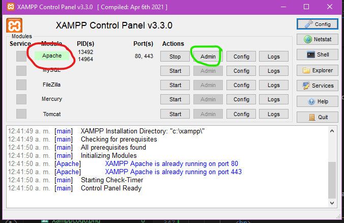
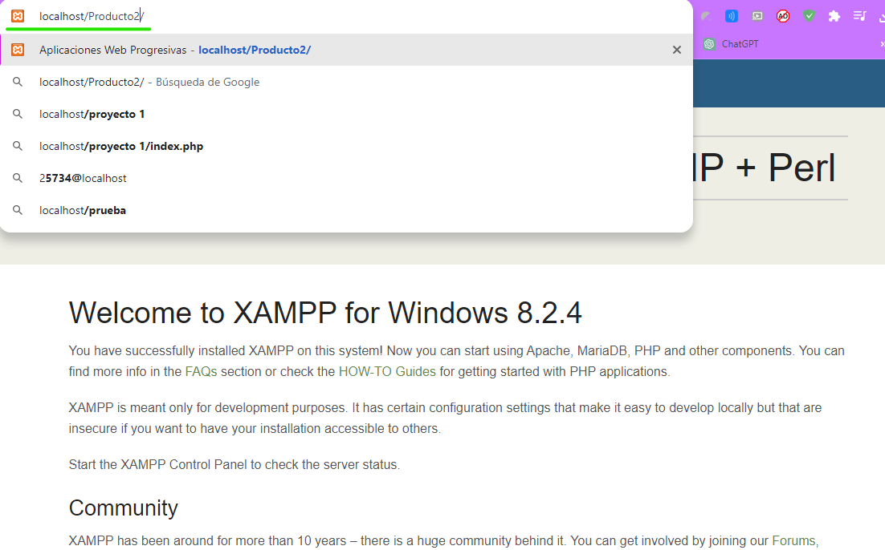
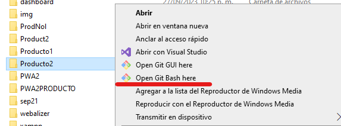
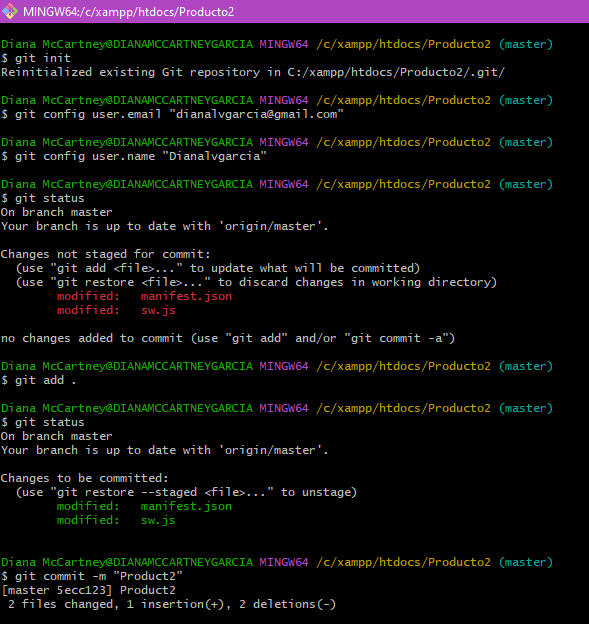
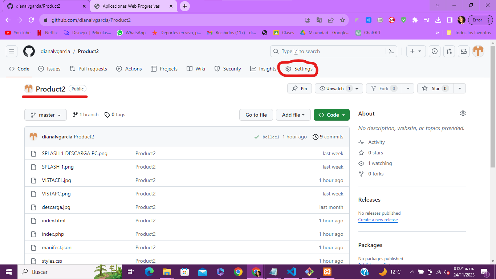
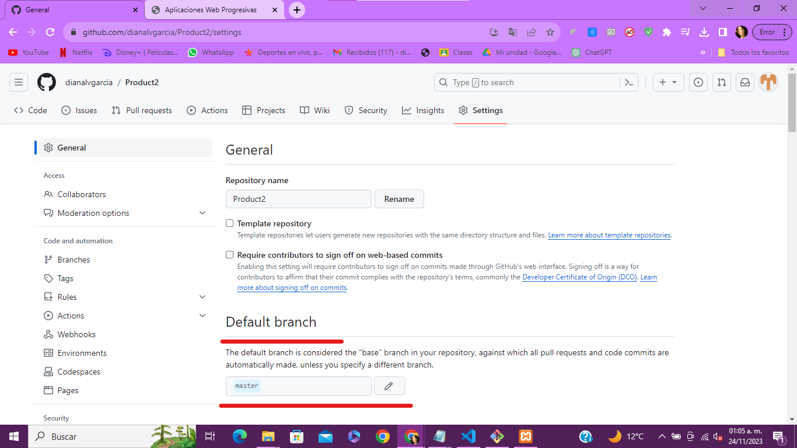
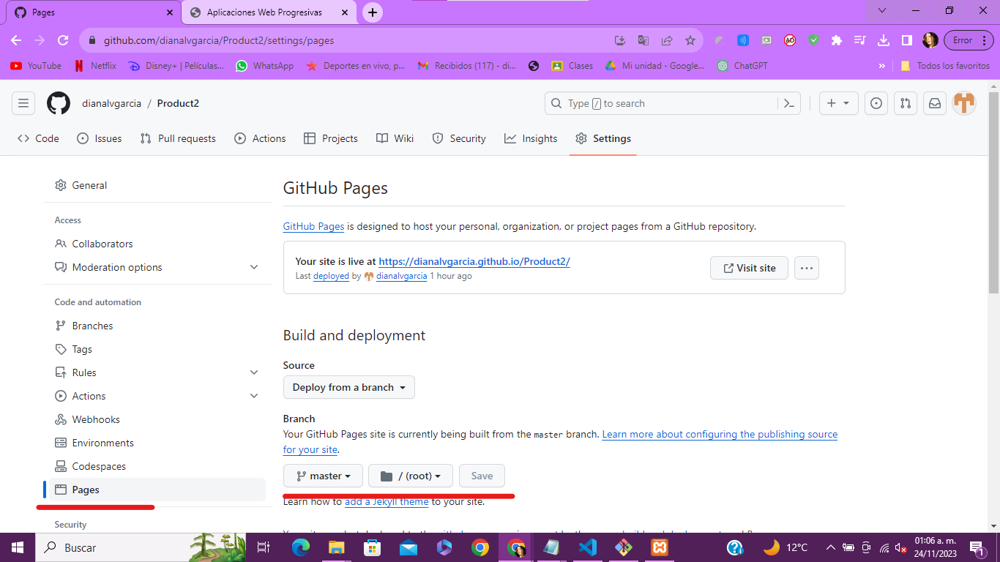

Capturas de pantalla de la implementación de descarga de la PWA
Evidencia de Home con el ícono de instalar

Evidencia de la aplicación descargada en PC

10mo "B"
Gestión y Desarrollo de Software
Aplicaciones Web Progresivas (PWA)
Las Aplicaciones Web Progresivas (PWA) son aplicaciones web que ofrecen una experiencia similar a las aplicaciones nativas en dispositivos móviles y de escritorio. Se caracterizan por las siguientes características:
Las PWA son una solución versátil para ofrecer una experiencia de usuario de alta calidad en la web, independientemente de la plataforma o el dispositivo utilizado.
Estos son algunos de los primeros pasos esenciales para desarrollar una PWA exitosa. El desarrollo de PWA implica un enfoque progresivo y continuo en la mejora de la experiencia del usuario.
Una Aplicación Web Progresiva (PWA) es una solución tecnológica que combina lo mejor de las aplicaciones web y las aplicaciones móviles nativas.
La creación de una PWA implica una serie de pasos clave para ofrecer una experiencia de usuario excepcional.
En primer lugar, es fundamental definir el propósito y las características de la aplicación. Esto incluye comprender las necesidades de los usuarios y determinar cómo la PWA resolverá sus problemas o proporcionará valor.
A continuación, se debe diseñar una interfaz de usuario atractiva y receptiva que funcione bien en dispositivos móviles y de escritorio. La optimización del rendimiento es crucial, ya que las PWA deben cargar rápidamente, incluso en conexiones de red lentas. Esto se logra mediante el uso de técnicas como el almacenamiento en caché con Service Workers. Además, habilitar el trabajo offline es una característica distintiva de las PWA.
Los Service Workers permiten a la aplicación funcionar sin conexión, mejorando la accesibilidad en todas las circunstancias. También se debe implementar la funcionalidad de instalación en la pantalla de inicio de los dispositivos, lo que facilita que los usuarios accedan rápidamente a la PWA.
Por último, la seguridad y la privacidad de los usuarios son esenciales. Es importante garantizar que los datos del usuario estén protegidos y que se respeten sus preferencias de privacidad. La creación de una PWA es un proceso progresivo y continuo, en el que se busca mejorar constantemente la experiencia del usuario y mantener la aplicación actualizada automáticamente.
Las Aplicaciones Web más rápidas se destacan por su rendimiento ágil y eficiente. Aquí hay algunas prácticas clave para lograr una mayor velocidad en las aplicaciones web:
La velocidad de carga y respuesta es esencial para la retención de usuarios y la satisfacción del cliente en el mundo de las aplicaciones web. Al seguir estas prácticas, puedes asegurarte de que tu aplicación web sea lo más rápida y eficiente posible.
El almacenamiento en caché es una técnica fundamental para mejorar la velocidad y el rendimiento de las aplicaciones web. Permite guardar en memoria temporal una copia de recursos, como archivos CSS, JavaScript e imágenes, en el dispositivo del usuario. Esto evita la necesidad de descargar estos recursos cada vez que el usuario accede a la aplicación, lo que acelera significativamente la carga y la respuesta de la misma.
Existen varias formas de implementar el almacenamiento en caché en una aplicación web:
El almacenamiento en caché es esencial para proporcionar una experiencia rápida y receptiva a los usuarios, especialmente en condiciones de red lentas o intermitentes. Al utilizar esta técnica de manera efectiva, puedes reducir la carga del servidor y mejorar la velocidad de tu aplicación web.

GitHub es una plataforma de desarrollo colaborativo basada en la web que juega un papel fundamental en el mundo de la programación y la gestión de proyectos de software.
GitHub proporciona un entorno centralizado donde los desarrolladores pueden alojar, colaborar, y gestionar versiones de su código fuente. Aquí hay algunas características clave:


Para revisar que nuestra PWA esté funcionando correctamente podemos utilizar un localhost
Abrimos Xampp, activamos Apache y después damos click en "Admin"
Nos va a enlazar a la página de Xammp, en la url ponemos el nombre de nuestro proyecto tal cual como está guardado en nuestra ruta de htdocs de Xampp
Y podremos ver nuestra página desde un localhost y podemos ver que se puede visualizar el ícono de descarga de la PWA
Abrimos desde nuestro directorio de Xammp, en la carpeta de htdocs, elegimos nuestro proyecto y damos click derecho y elegimos "Git Bash Here"
Se va abrir una terminal, a continuación se ingresaran los siguientes comandos para que se pueda subir la PWA a Github de acuerdo con la cuenta con la que ingresaste en éste y tambien con el nombre del repositorio que creaste
Ingresamos a la plataforma de Github y nos vamos en el respositorio que hicimos para que se pueda visualizar
En la parte de nuestro repositorio nos vamos a "Settings"
En "Default Branch" cambiamos de "None" a "Master"
En la parte izquierda inferior seleccionamos "Pages" y dentro de esta selección buscamos el apartado de "Branch" y seleccionamos "Master", le damos "Save" y a continuación la página se estará cargando junto con su URL
